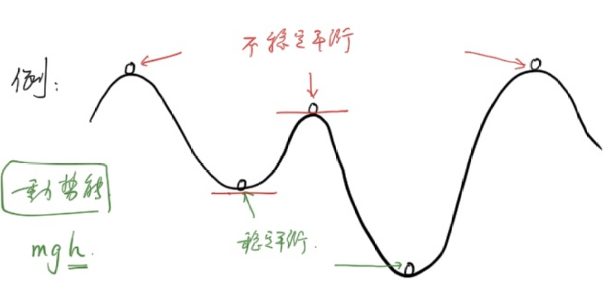
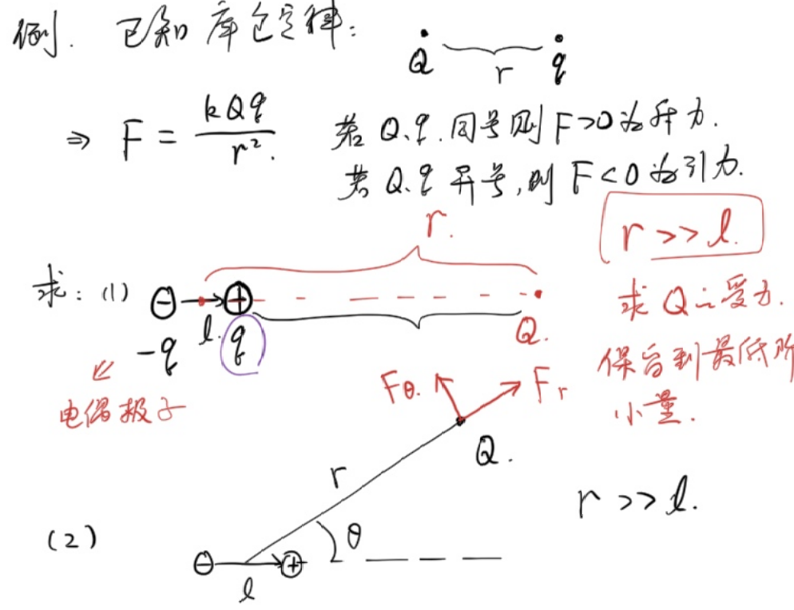

<meta data-alternate="https://freshmark.sunisalex.org/posts/physics/basic-calculus-03/" data-article="true" data-canonical="https://freshmark.sunisalex.org/en/posts/physics/basic-calculus-03/" data-description="This article introduces the application of calculus in physics, covering center-of-mass calculations (cones, hemispheric shells, hemispheres), conservative force potential energy and equilibrium stability criteria, Taylor small quantity expansion and its application in classic problems such as electric dipole forces, relativistic kinetic energy reduction, and non-uniform buoyancy." data-freshmark-page data-title="Introduction to Basic Calculus: Applications I — Freshmark"><main><header class="container article-header"><a href="/en/" class="back-link">← Back to all writing</a><p class="eyebrow article-subject">Physics</p><h1>Introduction to Basic Calculus: Applications I</h1><p class="article-dek">This article introduces the application of calculus in physics, covering center-of-mass calculations (cones, hemispheric shells, hemispheres), conservative force potential energy and equilibrium stability criteria, Taylor small quantity expansion and its application in classic problems such as electric dipole forces, relativistic kinetic energy reduction, and non-uniform buoyancy.</p><div class="article-meta"><time datetime="2026-05-24">May 24, 2026</time><span>9 min read</span><span>Physics Olympiad · Calculus</span><span class="view-count" data-article-view-count hidden>Article views <strong data-article-views></strong></span><a href="index.md" download>Download Markdown</a><button type="button" class="article-share" data-share-article data-share-text="This article introduces the application of calculus in physics, covering center-of-mass calculations (cones, hemispheric shells, hemispheres), conservative force potential energy and equilibrium stability criteria, Taylor small quantity expansion and its application in classic problems such as electric dipole forces, relativistic kinetic energy reduction, and non-uniform buoyancy." data-share-title="Introduction to Basic Calculus: Applications I"><span data-share-label>Share article</span></button><output aria-live="polite" class="visually-hidden" data-share-status role="status"></output></div></header><div class="article-wrap"><aside class="toc"><div class="toc-head"><p>On this page</p><button type="button" class="toc-toggle" aria-expanded="false" aria-label="Toggle table of contents" data-toc-toggle><span class="toc-toggle-label">Table of contents</span><span class="toc-toggle-icon" aria-hidden="true"></span></button></div><nav aria-label="Table of contents" class="toc-links" data-toc-links><a href="#pick-up-flowers-in-the-morning-and-evening" class="toc-level-2">Pick up flowers in the morning and evening</a><a href="#example-1" class="toc-level-3">Example 1</a><a href="#example-3" class="toc-level-3">Example 3</a><a href="#essential-difference-from-hemispherical-shell" class="toc-level-4">Essential difference from hemispherical shell</a><a href="#example-4" class="toc-level-3">Example 4</a><a href="#method-1" class="toc-level-4">Method 1</a><a href="#method-2" class="toc-level-4">Method 2</a><a href="#balanced-stability" class="toc-level-3">Balanced stability</a><a href="#the-second-sufficient-condition-for-the-extreme-value-of-the-derivative" class="toc-level-1">The second sufficient condition for the extreme value of the derivative</a><a href="#theorem-content" class="toc-level-3">Theorem content</a><a href="#application-examples" class="toc-level-3">Application examples</a><a href="#example-5" class="toc-level-3">Example 5</a><a href="#example-6" class="toc-level-3">Example 6</a><a href="#small-expansion" class="toc-level-2">Small expansion</a><a href="#example-7" class="toc-level-3">Example 7</a><a href="#taylor-expand" class="toc-level-3">Taylor Expand</a><a href="#example-8" class="toc-level-3">Example 8</a><a href="#example-9" class="toc-level-3">Example 9</a><a href="#example-10" class="toc-level-3">Example 10</a><a href="#example-force-on-an-electric-dipole" class="toc-level-1">Example: Force on an electric dipole</a><a href="#known-conditions" class="toc-level-2">Known conditions</a><a href="#title" class="toc-level-2">Title</a><a href="#request" class="toc-level-3">Request:</a><a href="#example-11" class="toc-level-3">Example 11</a><a href="#example-12" class="toc-level-3">Example 12</a><a href="#sonnet-46-summary" class="toc-level-2">Sonnet 4.6 Summary</a><a href="#summary" class="toc-level-2">Summary</a></nav></aside><article class="prose"><h2 id="pick-up-flowers-in-the-morning-and-evening">Pick up flowers in the morning and evening</h2><p><picture class="responsive-picture"><source srcset="i.freshmark-a16d14db9498-480w.avif 480w, i.freshmark-a16d14db9498-960w.avif 960w, i.freshmark-a16d14db9498-1116w.avif 1116w" type="image/avif"><source srcset="i.freshmark-a16d14db9498-480w.webp 480w, i.freshmark-a16d14db9498-960w.webp 960w, i.freshmark-a16d14db9498-1116w.webp 1116w" type="image/webp"></picture></p><h3 id="example-1">Example 1</h3><p>There is a cone with uniform mass, the angle between its generatrix and the height is <span class="math-expression math-inline" data-math-source="\theta"></span>, the radius of the base is <span class="math-expression math-inline" data-math-source="r"></span>, and the density is <span class="math-expression math-inline" data-math-source="\rho"></span>.</p><p>(1) Find the total mass</p><p>(2) Find the position of the center of gravity</p><p>Let the origin be the top of the cone and the height of the cone be the x-axis</p><p>(1)</p><p><span class="math-expression math-display" data-math-source="\begin{gathered} dm=\rho Sdh\\ =\pi\rho (h\tan\theta)^2dh\\ m=\int dm\\ =\pi\rho\tan^2\theta\int_0^{r\cot\theta}h^2dh\\ =\pi\rho\tan^2\theta\left(\frac{1}{3}h^3)\right|_0^{r\cot\theta}\\ =\frac{1}{3}\pi\rho r^3\cot\theta \end{gathered}" data-math-display></span></p><p>(2)</p><p>From the symmetry, the center of gravity is at the height of the cone.</p><p><span class="math-expression math-display" data-math-source="\begin{gathered} x_c=\frac{\int m_ix_i}{m}\\ =\frac{\int_0^{r\cot\theta}\pi\rho\tan^2\theta x^3dx}{m}\\ =\frac{\pi\rho\tan^2\theta\int_0^{r\cot\theta}x^3dx}{\frac{1}{3}\pi\rho r^3\cot\theta}\\ =3\frac{\tan^3\theta}{r^3}\frac{(r\cot\theta)^4}{4}\\ =\frac{3}{4}r\cot\theta \end{gathered}" data-math-display></span></p><h3 id="example-3">Example 3</h3><p>Find the position of the center of gravity of the uniform hemispheric shell**</p><p>With the center of the sphere as the origin, the vertical cross-section direction is the x-axis</p><p>Let’s assume that the mass per unit area is 1.</p><p>Following the example of finding the volume of an n-dimensional sphere, we consider cutting each one at <span class="math-expression math-inline" data-math-source="\theta,d\theta"></span>.</p><h4 id="essential-difference-from-hemispherical-shell">Essential difference from hemispherical shell</h4><table><thead><tr><th></th><th>Volume of n-dimensional sphere</th><th>Area of hemispherical shell</th></tr></thead><tbody><tr><td>Slicing method</td><td>Horizontal slice, thickness <span class="math-expression math-inline" data-math-source="\|dy\| = R\sin\theta\,d\theta"></span></td><td>Spherical annular shape, arc length <span class="math-expression math-inline" data-math-source="dl = R\,d\theta"></span></td></tr><tr><td><span class="math-expression math-inline" data-math-source="R\sin\theta\,d\theta"></span></td><td>✅ Correct (vertical thickness)</td><td>❌ Wrong (should be arc length)</td></tr></tbody></table><p><span class="math-expression math-display" data-math-source="\begin{gathered} dm=(2\pi R\sin\theta)Rd\theta\\ x_c=\frac{\int_{0}^{\frac{\pi}{2}} R\cos\theta dm}{2\pi R^2}\\ =\frac{2\pi R^3\int_{0}^{\frac{\pi}{2}}\sin\theta\cos\theta d\theta}{2\pi R^2}\\ =\frac{2\pi R^3\int_{0}^{\frac{\pi}{2}}\sin\theta d\sin\theta}{2\pi R^2}\\ =\frac{2\pi R^3\int_{0}^{1}udu}{2\pi R^2}\\ =\frac{2\pi R^3\times\frac{1}{2}}{2\pi R^2}\\ =\frac{1}{2}R \end{gathered}" data-math-display></span></p><h3 id="example-4">Example 4</h3><p>Find the position of the center of gravity of the uniform hemispheric body**</p><p>With the center of the sphere as the origin, the vertical cross-section direction is the x-axis</p><p>Let’s assume that the mass per unit volume is 1.</p><p>We cross the parallel section:</p><h4 id="method-1">Method 1</h4><p><span class="math-expression math-display" data-math-source="\begin{gathered} dm=\pi (R\sin\theta)^2\sin\theta Rd\theta\\ x_c=\frac{\int R\cos\theta dm}{\frac{2}{3}\pi R^3}\\ =\frac{\pi R^4\int_{0}^{\frac{\pi}{2}}\sin^3\theta\cos\theta d\theta}{\frac{2}{3}\pi R^3}\\ =\frac{3}{2}R\int_{0}^{\frac{\pi}{2}}\sin^3\theta d\sin\theta\\ =\frac{3}{2}R\int_{0}^1u^3du\\ =\frac{3}{8}R \end{gathered}" data-math-display></span></p><h4 id="method-2">Method 2</h4><p><span class="math-expression math-display" data-math-source="\begin{gathered} dm=\pi (R^2-x^2)dx\\ x_c=\frac{\int dmx}{\frac{2}{3}\pi R^3}\\ =\frac{\pi \int_{0}^R (R^2-x^2)xdx}{\frac{2}{3}\pi R^3}\\ =\frac{\pi \left(\frac{R^2}{2}x^2-\frac{1}{4}x^4\right)|_0^R}{\frac{2}{3}\pi R^3}\\ =\frac{3}{8}R \end{gathered}" data-math-display></span></p><h3 id="balanced-stability">Balanced stability</h3><p>Under <strong>conservative force</strong>, if the potential energy is at an extreme value, it is equilibrium:</p><ul><li>Potential energy is at a maximum value: unstable equilibrium -Potential energy is at a minimum: stable equilibrium</li></ul><p>Explanation: The work done by the conservative force has nothing to do with the path, but is only related to the initial and final positions.</p><p>Gravity, gravitation, and electrostatic forces are all conservative forces</p><p>Friction is a typical non-conservative force</p><p><picture class="responsive-picture"><source srcset="image.freshmark-80bacf3097a9-480w.avif 480w, image.freshmark-80bacf3097a9-960w.avif 960w, image.freshmark-80bacf3097a9-1057w.avif 1057w" type="image/avif"><source srcset="image.freshmark-80bacf3097a9-480w.webp 480w, image.freshmark-80bacf3097a9-960w.webp 960w, image.freshmark-80bacf3097a9-1057w.webp 1057w" type="image/webp"></picture></p><h1 id="the-second-sufficient-condition-for-the-extreme-value-of-the-derivative">The second sufficient condition for the extreme value of the derivative</h1><h3 id="theorem-content">Theorem content</h3><p>Let the function <span class="math-expression math-inline" data-math-source="f(x)"></span>&#32;have a second derivative at the point <span class="math-expression math-inline" data-math-source="x_0"></span>, and <span class="math-expression math-inline" data-math-source="f&#39;(x_0) = 0"></span>&#32;(that is, <span class="math-expression math-inline" data-math-source="x_0"></span>&#32;is a stationary point):</p><ol><li>If <span class="math-expression math-inline" data-math-source="f&#39;&#39;(x_0) &lt; 0"></span>, then <span class="math-expression math-inline" data-math-source="f(x)"></span>&#32;obtains the <strong>maximum value</strong> at <span class="math-expression math-inline" data-math-source="x_0"></span>.</li><li>If <span class="math-expression math-inline" data-math-source="f&#39;&#39;(x_0) &gt; 0"></span>, then <span class="math-expression math-inline" data-math-source="f(x)"></span>&#32;obtains the <strong>minimum value</strong> at <span class="math-expression math-inline" data-math-source="x_0"></span>.</li><li>If <span class="math-expression math-inline" data-math-source="f&#39;&#39;(x_0) = 0"></span>, then the theorem <strong>invalid</strong>, and it is impossible to determine whether an extreme value has been obtained (the first sufficient condition or a higher-order derivative needs to be used to determine).</li></ol><hr><h3 id="application-examples">Application examples</h3><p>Find the extreme value of function <span class="math-expression math-inline" data-math-source="f(x) = x^3 - 3x"></span>.</p><p><strong>Solution:</strong> First find the first derivative: <span class="math-expression math-display" data-math-source="f&#39;(x) = 3x^2 - 3" data-math-display></span></p><p>Let <span class="math-expression math-inline" data-math-source="f&#39;(x) = 0"></span>, the solution to the stationary point is: <span class="math-expression math-display" data-math-source="x_1 = 1, \quad x_2 = -1" data-math-display></span></p><p>Then find the second derivative: <span class="math-expression math-display" data-math-source="f&#39;&#39;(x) = 6x" data-math-display></span></p><p>Substitute the stationary point into the second derivative to judge:</p><ul><li>For <span class="math-expression math-inline" data-math-source="x_1 = 1"></span>: <span class="math-expression math-display" data-math-source="f&#39;&#39;(1) = 6 &gt; 0" data-math-display></span> So <span class="math-expression math-inline" data-math-source="f(x)"></span>&#32;obtains the <strong>minimum value</strong> at <span class="math-expression math-inline" data-math-source="x = 1"></span>, and the minimum value is <span class="math-expression math-inline" data-math-source="f(1) = -2"></span>.</li><li>For <span class="math-expression math-inline" data-math-source="x_2 = -1"></span>: <span class="math-expression math-display" data-math-source="f&#39;&#39;(-1) = -6 &lt; 0" data-math-display></span> So <span class="math-expression math-inline" data-math-source="f(x)"></span>&#32;obtains the <strong>maximum value</strong> at <span class="math-expression math-inline" data-math-source="x = -1"></span>, and the maximum value is <span class="math-expression math-inline" data-math-source="f(-1) = 2"></span>.</li></ul><h3 id="example-5">Example 5</h3><p>There is a rubber band with mass <span class="math-expression math-inline" data-math-source="m"></span>, stiffness coefficient <span class="math-expression math-inline" data-math-source="k"></span>, and original length <span class="math-expression math-inline" data-math-source="2\pi r_0"></span>, located on a cone whose angle between the busbar and the vertical line is <span class="math-expression math-inline" data-math-source="\theta"></span>.</p><p>(1) Find the equilibrium position</p><p>(2) Find the stability of upper and lower disturbances</p><p><picture class="responsive-picture"><source srcset="image-1.freshmark-97c3813dfb44-480w.avif 480w, image-1.freshmark-97c3813dfb44-960w.avif 960w, image-1.freshmark-97c3813dfb44-1225w.avif 1225w" type="image/avif"><source srcset="image-1.freshmark-97c3813dfb44-480w.webp 480w, image-1.freshmark-97c3813dfb44-960w.webp 960w, image-1.freshmark-97c3813dfb44-1225w.webp 1225w" type="image/webp"></picture></p><p>(1)</p><p>Suppose the height difference from the equilibrium position to the top of the cone is <span class="math-expression math-inline" data-math-source="z"></span>, and the extension of the rubber band at equilibrium is <span class="math-expression math-inline" data-math-source="x"></span></p><p><span class="math-expression math-display" data-math-source="\begin{gathered} x=2\pi (z\tan\theta-r_0)\\ E_p=\frac{1}{2}kx^2-mgz\\ =2\pi^2 k(z\tan\theta-r_0)^2-mgz\\ =2\pi^2k\tan^2\theta z^2-(mg+4\pi^2kr_0\tan\theta)z+2\pi^2kr_0^2\\ z_0=\frac{mg+4\pi^2kr_0\tan\theta}{4\pi^2k\tan^2\theta} \end{gathered}" data-math-display></span></p><p>(2)</p><p><span class="math-expression math-inline" data-math-source="E_p(z)"></span>&#32;obtains the minimum value at <span class="math-expression math-inline" data-math-source="z=z_0"></span>, so the equilibrium is a stable equilibrium.</p><h3 id="example-6">Example 6</h3><p>The radius of the smooth ring is <span class="math-expression math-inline" data-math-source="R"></span>. One end of the spring is hung directly above the ring, and the other end is tied to a small ball with mass <span class="math-expression math-inline" data-math-source="m"></span>. The ring passes through the small ball. The original length of the spring is 0 and the stiffness coefficient is <span class="math-expression math-inline" data-math-source="k"></span></p><p>(1) Find the equilibrium position</p><p>(2) Find the stability of equilibrium.</p><p><picture class="responsive-picture"><source srcset="image-2.freshmark-23d3684f79ea-480w.avif 480w, image-2.freshmark-23d3684f79ea-960w.avif 960w, image-2.freshmark-23d3684f79ea-1240w.avif 1240w" type="image/avif"><source srcset="image-2.freshmark-23d3684f79ea-480w.webp 480w, image-2.freshmark-23d3684f79ea-960w.webp 960w, image-2.freshmark-23d3684f79ea-1240w.webp 1240w" type="image/webp"></picture></p><p>(1)</p><p>Let the angle between the spring and the vertical direction be <span class="math-expression math-inline" data-math-source="\theta"></span></p><p><span class="math-expression math-display" data-math-source="\begin{gathered} E_p=\frac{1}{2}k(2R\cos\theta)^2+mg(2R\sin^2\theta)\\ =2kR^2\cos^2\theta+2mgR(1-\cos^2\theta)\\ =2R(kR-mg)\cos^2\theta+2mgR\\ \frac{dE_p}{d\theta}=4R(mg-kR)\cos\theta\sin\theta=0\\ \rightarrow \sin2\theta=0\\ \theta=0 \text{ or } \frac{\pi}{2} \end{gathered}" data-math-display></span></p><p>The equilibrium positions are point A and point B</p><p>(2)</p><p><span class="math-expression math-display" data-math-source="\begin{gathered} \frac{d^2E_p}{d\theta^2}=4R(mg-kR)\cos2\theta \end{gathered}" data-math-display></span></p><p>If <span class="math-expression math-inline" data-math-source="mg\lt kR"></span>, then when <span class="math-expression math-inline" data-math-source="\theta=0"></span>, <span class="math-expression math-inline" data-math-source="\frac{d^2E_p}{d\theta^2}\lt0"></span></p><p>It is the potential energy maximum point, and point B is an unstable equilibrium.</p><p>When <span class="math-expression math-inline" data-math-source="\theta=\frac{\pi}{2}"></span>, <span class="math-expression math-inline" data-math-source="\frac{d^2E_p}{d\theta^2}\gt0"></span></p><p>It is the potential energy minimum point, and point A belongs to stable equilibrium.</p><p><span class="math-expression math-inline" data-math-source="mg\gt kR"></span>, the opposite is true</p><h2 id="small-expansion">Small expansion</h2><h3 id="example-7">Example 7</h3><p><span class="math-expression math-inline" data-math-source="f(x)=\sqrt{x}"></span>, estimated <span class="math-expression math-inline" data-math-source="f(4.01)"></span></p><h3 id="taylor-expand">Taylor Expand</h3><p><strong>Duck Principle</strong>: If something looks like a duck, sounds like a duck, and eats meat that tastes like a duck, then it is a duck.</p><p>Continuously obtain more information to get closer to the truth</p><p><span class="math-expression math-display" data-math-source="\boxed{f(x_0+x)=f(x_0)+f&#39;(x_0)x+\frac{f&#39;&#39;(x)}{2!}x^2+\frac{f&#39;&#39;&#39;(x)}{3!}x^3+...}" data-math-display></span></p><h3 id="example-8">Example 8</h3><p><span class="math-expression math-inline" data-math-source="f(x)=x^\alpha"></span>&#32;Expansion near 1:</p><p><span class="math-expression math-display" data-math-source="\begin{gathered} f&#39;(x)=\alpha x^{\alpha-1},f&#39;(1)=\alpha\\ f&#39;&#39;(x)=\alpha(\alpha-1)x^{\alpha-2},f&#39;&#39;(1)=\alpha(\alpha-1)\\ ...\\ f(1+x)=1+\alpha x+\frac{\alpha(\alpha-1)}{2}x^2+...\\ \text{where }|x|\lt 1 \end{gathered}" data-math-display></span></p><p>In the same way, other common Taylor expansions are obtained</p><p><span class="math-expression math-display" data-math-source="\begin{gathered} \sin\theta=\theta-\frac{1}{3!}\theta^3+\frac{1}{5!}\theta^5+...\\ \cos\theta=1-\frac{1}{2!}\theta^2+\frac{1}{4!}\theta^4\\ e^x=1+x+\frac{1}{2!}x^2+\frac{1}{3!}x^3+...\\ \ln (1+x)=x-\frac{1}{2}x^2+\frac{1}{3}x^3-... \end{gathered}" data-math-display></span></p><h3 id="example-9">Example 9</h3><p>Proof: <span class="math-expression math-inline" data-math-source="1+e^{i\pi}=0"></span>&#32;or <span class="math-expression math-inline" data-math-source="e^{i\theta}=\cos\theta+i\sin\theta"></span>, where <span class="math-expression math-inline" data-math-source="i"></span>&#32;is the imaginary unit.</p><p>Bringing <span class="math-expression math-inline" data-math-source="i\theta"></span>&#32;into <span class="math-expression math-inline" data-math-source="e^x"></span>&#32;Taylor expansion is easy to prove.</p><h3 id="example-10">Example 10</h3><h1 id="example-force-on-an-electric-dipole">Example: Force on an electric dipole</h1><h2 id="known-conditions">Known conditions</h2><p>Coulomb's law:</p><p><span class="math-expression math-display" data-math-source="F = \frac{kQq}{r^2}" data-math-display></span></p><ul><li>If <span class="math-expression math-inline" data-math-source="Q"></span>&#32;and <span class="math-expression math-inline" data-math-source="q"></span>&#32;have the same sign, then <span class="math-expression math-inline" data-math-source="F &gt; 0"></span>&#32;is the <strong>repulsive force</strong></li><li>If <span class="math-expression math-inline" data-math-source="Q"></span>&#32;and <span class="math-expression math-inline" data-math-source="q"></span>&#32;have different signs, then <span class="math-expression math-inline" data-math-source="F &lt; 0"></span>&#32;is <strong>gravity</strong></li></ul><hr><h2 id="title">Title</h2><p>An <strong>electric dipole</strong> consists of a pair of equal dissimilar charges <span class="math-expression math-inline" data-math-source="+q"></span>&#32;and <span class="math-expression math-inline" data-math-source="-q"></span>, with a distance of <span class="math-expression math-inline" data-math-source="l"></span>.</p><h3 id="request">Request:</h3><p><strong>(1)</strong> The force on the point charge <span class="math-expression math-inline" data-math-source="Q"></span>&#32;at a distance <span class="math-expression math-inline" data-math-source="r"></span>&#32;from the center of the dipole on the extended axis of the electric dipole.</p><blockquote><p>Condition: <span class="math-expression math-inline" data-math-source="r \gg l"></span>, reserved to the lowest order epsilon.</p></blockquote><p><strong>(2)</strong> The force (decomposed into a radial component <span class="math-expression math-inline" data-math-source="F_r"></span>&#32;and a tangential component <span class="math-expression math-inline" data-math-source="F_\theta"></span>) on a point charge <span class="math-expression math-inline" data-math-source="Q"></span>&#32;at a distance <span class="math-expression math-inline" data-math-source="r"></span>&#32;from the center of the dipole when the axis of the electric dipole forms an angle <span class="math-expression math-inline" data-math-source="\theta"></span>&#32;with the connecting line.</p><blockquote><p>Condition: <span class="math-expression math-inline" data-math-source="r \gg l"></span>, reserved to the lowest order epsilon.</p></blockquote><p><picture class="responsive-picture"><source srcset="image-3.freshmark-09677a0f783e-480w.avif 480w, image-3.freshmark-09677a0f783e-960w.avif 960w, image-3.freshmark-09677a0f783e-994w.avif 994w" type="image/avif"><source srcset="image-3.freshmark-09677a0f783e-480w.webp 480w, image-3.freshmark-09677a0f783e-960w.webp 960w, image-3.freshmark-09677a0f783e-994w.webp 994w" type="image/webp"></picture></p><p>(1)</p><p><span class="math-expression math-display" data-math-source="\begin{gathered} F=\frac{kQq}{(r-\frac{l}{2})^2}+\frac{kQ(-q)}{(r+\frac{l}{2})^2}\\ =\frac{kQq}{r^2}[(1-\frac{l}{2r})^{-2}-(1+\frac{l}{2r})^{-2}]\\ \approx \frac{kQq}{r^2}{\frac{2l}{r}}\\ =\frac{2kQql}{r^3} \end{gathered}" data-math-display></span></p><p>Among them <span class="math-expression math-inline" data-math-source="p=ql"></span>&#32;is called <strong>dipole moment</strong></p><p>(2)</p><p><picture class="responsive-picture"><source srcset="image-4.freshmark-9e1eb396a06d-480w.avif 480w, image-4.freshmark-9e1eb396a06d-960w.avif 960w, image-4.freshmark-9e1eb396a06d-1316w.avif 1316w" type="image/avif"><source srcset="image-4.freshmark-9e1eb396a06d-480w.webp 480w, image-4.freshmark-9e1eb396a06d-960w.webp 960w, image-4.freshmark-9e1eb396a06d-1316w.webp 1316w" type="image/webp"></picture></p><p><span class="math-expression math-display" data-math-source="\begin{gathered} F_r=F_1\cos\Delta\theta_1-F_2\cos\Delta\theta_2\\ =F_1(1-\frac{1}{2}\Delta\theta_1^2)-F_2(1-\frac{1}{2}\Delta\theta_2^2)\\ \xlongequal{\text{neglect second-order infinitesimals}}F_1-F_2\\ =\frac{kQq}{r^2+(\frac{l}{2})^2-2r\frac{l}{2}\cos\theta}-\frac{kQq}{r^2+(\frac{l}{2})^2+2r\frac{l}{2}\cos\theta}\\ =\frac{kQq}{r^2}(\frac{1}{1-\frac{l}{r}\cos\theta+\frac{l^2}{4r^2}}-\frac{1}{1+\frac{l}{r}\cos\theta+\frac{l^2}{4r^2}})\\ \xlongequal{\text{Taylor expansion}}\frac{kQq}{r^2}(\frac{2l\cos\theta}{r})\\ =\frac{2kQql\cos\theta}{r^3} \end{gathered}" data-math-display></span></p><p><span class="math-expression math-display" data-math-source="\begin{gathered} F_\theta=\frac{kQql\sin\theta}{r^3} \end{gathered}" data-math-display></span></p><h3 id="example-11">Example 11</h3><p>In relativity, the total energy of an object <span class="math-expression math-inline" data-math-source="E=mc^2"></span></p><p>Where <span class="math-expression math-inline" data-math-source="m"></span>&#32;is the <strong>dynamic mass</strong>: <span class="math-expression math-inline" data-math-source="m=\frac{1}{\sqrt{1-\frac{v^2}{c^2}}}m_0"></span></p><p>Among them, <span class="math-expression math-inline" data-math-source="v"></span>&#32;is the speed of the object, <span class="math-expression math-inline" data-math-source="c"></span>&#32;is the speed of light, and <span class="math-expression math-inline" data-math-source="m_0"></span>&#32;is the <strong>static mass</strong></p><p>Call <span class="math-expression math-inline" data-math-source="E_0=m_0c^2"></span>&#32;static energy, and we have</p><p><span class="math-expression math-display" data-math-source="\boxed{E_k=E-E_0}" data-math-display></span></p><p>According to classical physics <span class="math-expression math-inline" data-math-source="E_k=\frac{1}{2}mv^2"></span></p><p>Proof: At <span class="math-expression math-inline" data-math-source="v\lt\lt c"></span>, <span class="math-expression math-inline" data-math-source="E_k"></span>&#32;in the theory of relativity is reduced to kinetic energy in classical physics</p><p><span class="math-expression math-display" data-math-source="\begin{gathered} E_k=\frac{1}{\sqrt{1-\frac{v^2}{c^2}}}m_0c^2-m_0c^2\\ =m_0c^2[(1-\frac{v^2}{c^2})^{\frac{-1}{2}}-1]\\ \xlongequal{\text{retain first-order infinitesimals}}\frac{1}{2}m_0v^2 \end{gathered}" data-math-display></span></p><h3 id="example-12">Example 12</h3><p>There is a glass of sugar water, its density <span class="math-expression math-inline" data-math-source="\rho(x)"></span>&#32;is related to depth, <span class="math-expression math-inline" data-math-source="\rho(x)=\rho_0e^\frac{x}{l_0}"></span></p><p>There is a uniform hard rod with density <span class="math-expression math-inline" data-math-source="\rho_1=1.5\rho_0"></span>, cross-sectional area <span class="math-expression math-inline" data-math-source="S"></span>&#32;and length <span class="math-expression math-inline" data-math-source="l_0"></span></p><p>When seeking equilibrium, the distance from the top to the water surface (is it above or below the water surface?). <span class="math-expression math-display" data-math-source="m_0=\rho_1Sl_0=1.5\rho_0Sl_0" data-math-display></span> Assuming that the upper end is on the water, the length immersed in the water <span class="math-expression math-inline" data-math-source="x_0\lt l_0"></span></p><p><span class="math-expression math-display" data-math-source="\begin{gathered} F=\int_{0}^{x_0}\rho(x)gSdx\\ =\rho_0gS\int_{0}^{x_0}e^\frac{x}{l}dx\\ =\rho_0gSl(e^{\frac{x_0}{l}}-1) \end{gathered}" data-math-display></span></p><p>Request <span class="math-expression math-inline" data-math-source="F=m_0g=\rho_1Sl_0=1.5\rho_0gSl_0"></span></p><p>That is <span class="math-expression math-inline" data-math-source="e^\frac{x_0}{l_0}=2.5,x_0\lt l_0"></span>, assuming that</p><h2 id="sonnet-46-summary">Sonnet 4.6 Summary</h2><h2 id="summary">Summary</h2><p>This section focuses on the core application of calculus in physical modeling and connects the following main lines:</p><p><strong>Center of mass calculation</strong>: Through differential integration, the center of gravity positions of the uniform cone (<span class="math-expression math-inline" data-math-source="\frac{3}{4}r\cot\theta"></span>), hemispherical shell (<span class="math-expression math-inline" data-math-source="\frac{1}{2}R"></span>) and hemisphere (<span class="math-expression math-inline" data-math-source="\frac{3}{8}R"></span>) were solved respectively, and the impact of the selection of slicing method on the integral was experienced.</p><p><strong>Balance and Stability</strong>: Introduce the potential energy extreme value criterion-minimum potential energy corresponds to stable equilibrium, and maximum potential energy corresponds to unstable equilibrium. Through the two models of the rubber band on the cone and the ring spring ball, this criterion is embodied as a symbolic analysis of the second derivative of <span class="math-expression math-inline" data-math-source="E_p"></span>.</p><p><strong>Taylor expansion and small quantity approximation</strong>: Master common expansions such as <span class="math-expression math-inline" data-math-source="(1+x)^\alpha"></span>, <span class="math-expression math-inline" data-math-source="\sin\theta"></span>, <span class="math-expression math-inline" data-math-source="\cos\theta"></span>, <span class="math-expression math-inline" data-math-source="e^x"></span>, <span class="math-expression math-inline" data-math-source="\ln(1+x)"></span>&#32;and other common expansions, and apply them to:</p><ul><li>Force on the electric dipole (induced dipole moment <span class="math-expression math-inline" data-math-source="p = ql"></span>)</li><li>Relativistic kinetic energy reduces to <span class="math-expression math-inline" data-math-source="\frac{1}{2}m_0v^2"></span>&#32;at <span class="math-expression math-inline" data-math-source="v \ll c"></span></li><li>Buoyancy equilibrium of hard rods in sugar water with non-uniform density</li></ul><p><strong>Core idea</strong>: The key to complex problems often lies in selecting appropriate microelements and coordinate systems, and then combining small expansions to retain the main terms, thereby turning tedious precise calculations into concise approximate results.</p></article></div><section class="container comments" data-comments data-comments-path="/en/posts/physics/basic-calculus-03/"><div class="comments-head"><div><p class="eyebrow">Comments</p><h2 data-comments-title>Comments</h2></div><p>Sign in to join the discussion. Email is verified only when you register.</p></div><div class="comment-list" aria-live="polite" data-comment-list><p class="comment-state" data-comment-state>Loading comments…</p></div><button type="button" class="comment-more" data-comments-more hidden>Load older comments</button><div class="comment-auth" data-comment-auth><p class="comment-auth-status" data-auth-loading>Checking your session…</p><div hidden data-auth-guest><form class="comment-auth-form" data-auth-login><h3>Sign in to comment</h3><label>Email<input autocomplete="email" name="email" maxlength="254" required type="email"></label><label>Password<input autocomplete="current-password" name="password" maxlength="128" required type="password"></label><div class="comment-form-foot"><p class="comment-form-status" role="status" data-auth-login-status></p><button type="submit">Sign in</button></div></form><details class="comment-register"><summary>Need an account? Register</summary><form class="comment-auth-form" data-auth-register><label>Name<input autocomplete="name" name="name" maxlength="40" required></label><label>Email<input autocomplete="email" name="email" maxlength="254" required type="email"></label><label>Password<input autocomplete="new-password" name="password" maxlength="128" required type="password" minlength="8"></label><p class="comment-auth-hint">Use at least 8 characters.</p><div class="comment-form-foot"><p class="comment-form-status" role="status" data-auth-register-status></p><button type="submit">Register</button></div></form></details></div><form class="comment-auth-form" hidden data-auth-verify><p>We sent a code to your email. Complete registration within 10 minutes.</p><label>Six-digit code<input autocomplete="one-time-code" name="code" maxlength="6" required minlength="6" inputmode="numeric" pattern="[0-9]{6}"></label><div class="comment-form-foot"><p class="comment-form-status" role="status" data-auth-verify-status></p><button type="submit">Complete registration</button></div></form><div class="comment-auth-user" data-auth-user hidden><p>Signed in as <strong data-auth-user-name></strong> <span data-auth-user-email></span></p><button type="button" data-auth-logout>Sign out</button></div></div><form class="comment-form" hidden data-comment-form><label>Comment<textarea maxlength="2000" minlength="2" name="body" placeholder="Share your thoughts…" required rows="5"></textarea></label><p class="comment-markdown-hint">Markdown supported: emphasis, links, quotes, lists, and code.</p><label aria-hidden="true" class="comment-honeypot">Website<input autocomplete="off" name="website" tabindex="-1"></label><div class="comment-form-foot"><p class="comment-form-status" role="status" data-comment-form-status></p><button type="submit" data-comment-submit>Post comment</button></div></form></section></main>